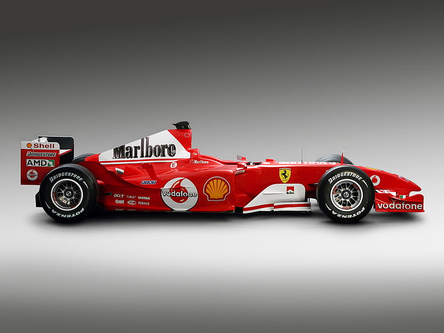
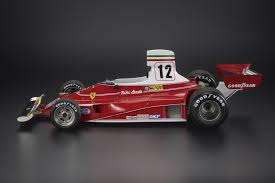
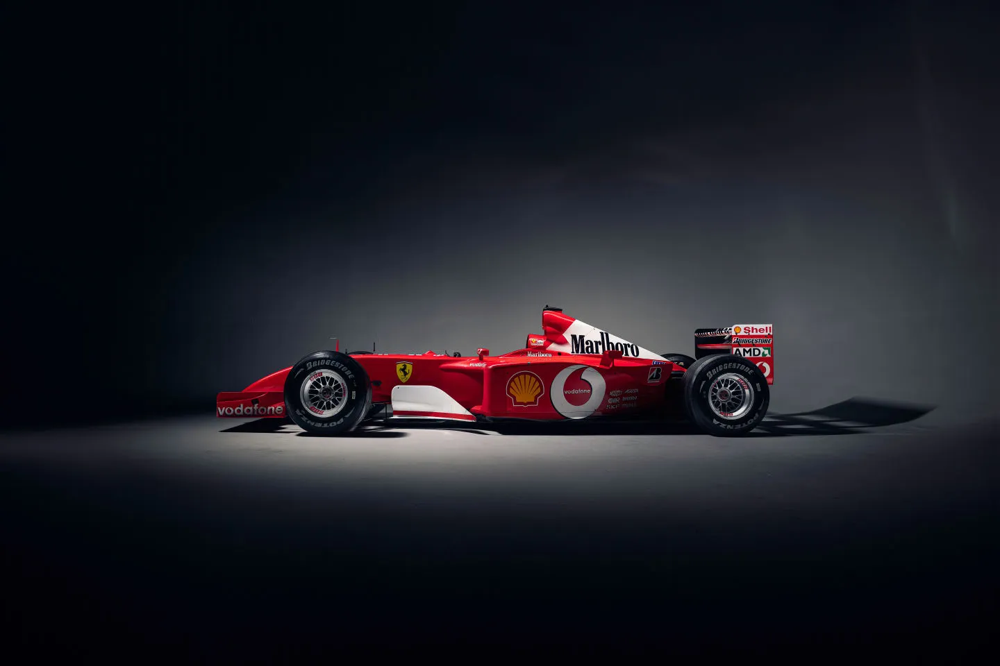
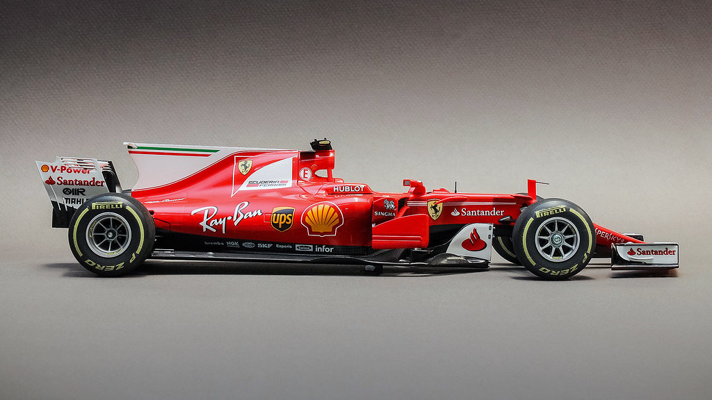
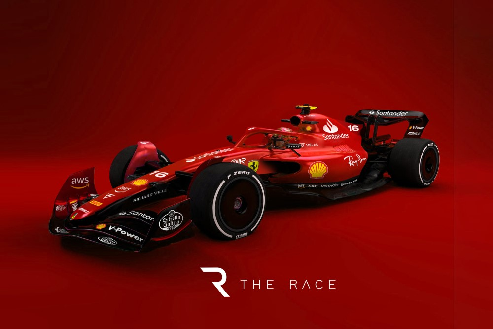

A Ferrari híres Forma-1-es autói, amelyek világbajnoki címeket és ikonikus versenyeket nyertek.
| Autó | Év | Világbajnoki címek | Pilóták | |
|---|---|---|---|---|
| Ferrari F2004 | 2004 | 1 (Michael Schumacher) | Michael Schumacher, Rubens Barrichello |  |
| Ferrari 312T | 1975-1980 | 3 (Niki Lauda, Jody Scheckter) | Niki Lauda, Jody Scheckter |  |
| Ferrari F2002 | 2002 | 1 (Michael Schumacher) | Michael Schumacher, Rubens Barrichello |  |
| Ferrari SF70H | 2017 | 0 | Sebastian Vettel, Kimi Räikkönen |  |
| Ferrari F1-75 | 2022 | 0 | Charles Leclerc, Carlos Sainz |  |
A Ferrari autói mindig is a Forma-1 legikonikusabb és legsikeresebb gépei közé tartoztak.